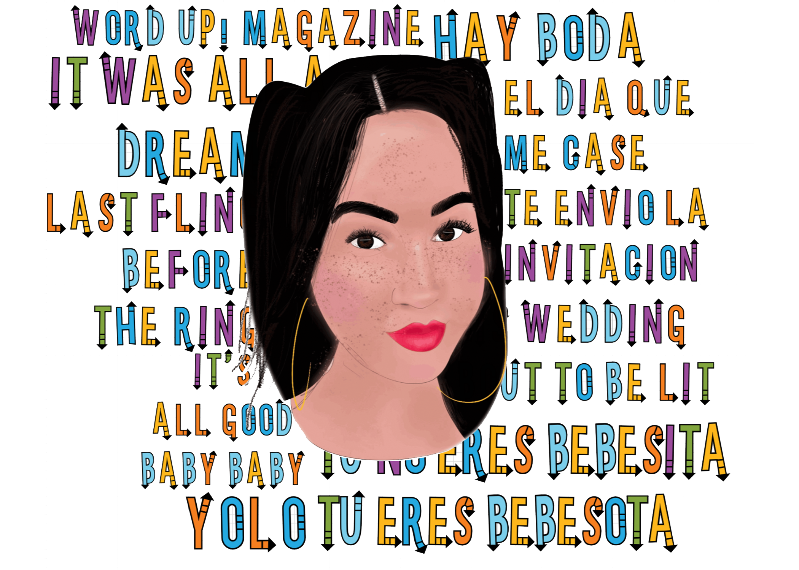

Creative and Graphic Designer.
Freelance Latin female artist and Small Business owner of The Art Escape (Protagonista LLC) Providing multi media design services. Expert at fine art, illustration, video editing, motion design, graphic design, branding, social media marketing.
On a more personal level, I have a one year old baby boy. I work full time as a teacher assistant. I own my own small business and recently opened my storefront a block away from Yankee Stadium, in my neighborhood. It is a creative studio and event space. I am a busy bee I know you're wondering how I am able to juggle it all.
One of my favorite quotes is:
“A jack of all trades is a master of none, but often times better than a master of one.”
 <
<
917-650-2269
Email: artescapenyc@gmail.com
Lets get in touch. Send me a message: